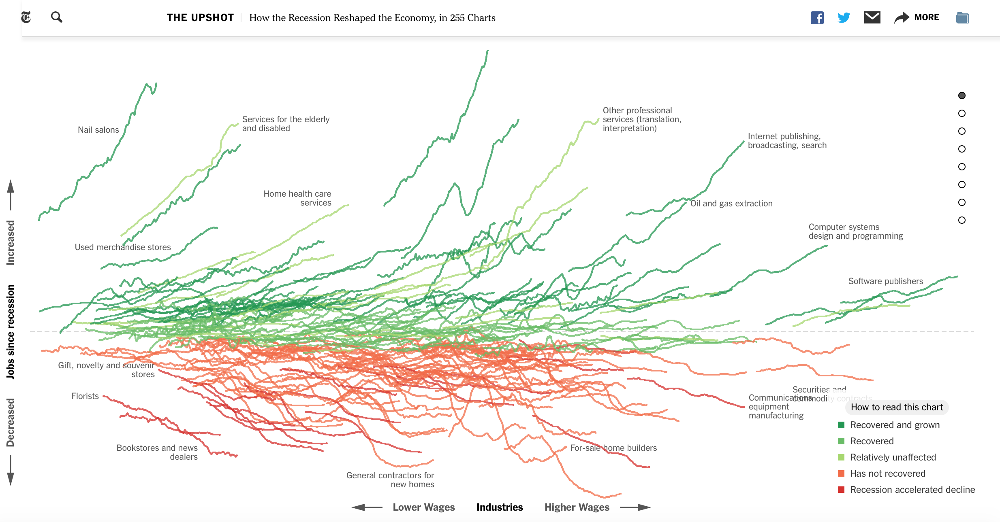

welcome to phoebe's big data, visualization and society page.
i'm a student in MIT's department of urban studies and planning. this is my first forray into coding, so please bear with me! this page will be a repository for data visualizations i like and, someday, ones that i create.
to start out, here is a link to a page created by jeremy ashkenas and alicia parlapiano from the new york times:how the recession reshaped the economy, in 255 charts. it's a neat example of how data visualization can be used to unpack a complex story into bite sized pieces without losing sight of how those pieces fit together. this interactive tool helps us look beyond the reassuring job growth numbers in the economy overall. a closer look at how industries have fared differently since the great recession could help shed light on why some parts of the country are still feeling the effects of the recession more than others.
